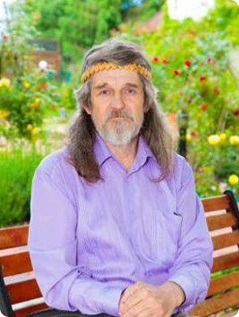
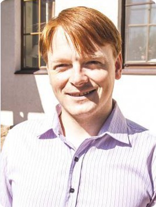

ЛЕЧЕБНОЕ ГОЛОДАНИЕ
ПОД НАБЛЮДЕНИЕМ команды специалистов в предгорном эко-санатории "Березки" п.Псебай Краснодарский край
СМОТРЕТЬ 3D-ТУР ПО САНАТОРИЮВы получите
-

Здоровье и очищение
Очищение организма от шлаков и токсинов -
Походы и экскурсии
Оздоровительные прогулки в горы и на реку -

под наблюдением специалистов
Под наблюдением опытной команды специалистов 24 ч. в сутки -
УНИКАЛЬНАЯ ДИАГНОСТИКА
Аппарат КСИ-диагностики - инновация, разработанная для МВД России, таких аппаратов всего три в стране, один в Санкт-Петербурге, второй в Москве и третий у нас. -
СНИЖЕНИЕ ВЕСА
Снижение веса на 10 и более килограмм**Ваши результаты могут отличаться от заявленных
Помощь в подборе программы!
оставьте заявку и наш менеджер поможет подобрать вам программу голодания
Политика конфиденциальностиМы практикуем лечебное голодание
по проверенной методике Ю.С. Николаева и по рецепту фитосбора М.В. Оганян

Лечебное голодание + пешие прогулки в горы и спа процедуры дают лучший эффект

Показания к лечебному голоданию:
- Зашлакованность организма
- Паразиты
- Нарушение обмена веществ
- Заболевания эндокринной системы
- Одышка
- Лишний вес
- Регулярный стресс и нервное напряжение
После полного курса голодания Вы:
- Избавитесь от шлаков и токсинов1
- Перезапустите свой метаболизм2
- Получите эффект омоложения на клеточном уровне3
- Восстановите обмен веществ и работу эндокринной системы4
- Укрепите иммунитет за счет скрытых сил организма6
- Подтянете кожу7
- И, конечно, снизите вес на 10% - 25%!7
1,2,3,4,5,6,7 - Ваши результаты могут отличаться от заявленных
Отзывы наших гостей
о лечебном голодании
-

Владимир. Курс голодания по методике Ю.Николаева - 7 дней
Я попробовал голодание в Березках, начал с 7ми дней. Для меня это было проверкой на силу воли. Я часто хожу в горы, часто - зимой. Сила воли там очень нужна. В общем, перед погружением в голодания боялся, что сорвусь. Да и врачи начали в один голос - для Вашего желудка это вредно!! Но я решился. Заодно вел дневник ощущений. Ощущений была масса. И приятных и не очень. Однако я выдержал. Сила воли укрепилась, а заодно укрепился и иммунитет, что конечно мне сильно помогло - я уже совсем скоро снова отправился покорять горы. На этот раз в Абхазии.*
*Ваши результаты могут отличаться от заявленных.
-

Анна. Курс голодания по рецепту фитосбора М.Оганян - 14 дней
Последние несколько лет я часто слышала и читала о том, как голодание вылечивает многие заболевания. И конечно думала, что раз мне врачи с моей аллергией не рекомендовали голодать, то и нечего про это думать. Однако, получилось до крайности забавно, когда приехав в Березки вместе с подругой, я с ней за компанию можно сказать "села" на недельное голодание. Дело было летом, развлечений хватало - одни экскурсии чего стоили! Так что я не заметила нескольких дней без еды… Были соки, были травяные сборы, были эмоции от горных пейзажей. Кругом такие аллергичные для меня растения и… ни одной попытки моего организма на них среагировать! Аллергии не случилось ни во время голодания, ни после него еще какое время. Теперь я регулярно голодаю и часто - в Березках.*
*Ваши результаты могут отличаться от заявленных.
-

Наталья. Курс голодания по рецепту фитосбора М.Оганян - 21 день
Голодание для меня было альтернативой диетам, на которых я сидела не раз. Диеты помогали, конечно, но ненадолго. Приехала в Санаторий "Березки" для прохождения спа-курса, и мне порекомендовали голодание. Я решила попробовать. 21 день - это острые, но надо признаться приятные ощущения. И результат - на лицо! Точнее, на лице. Да и на всем теле. Сбросила килограммы, кожа заметно почистилась. Даже казалось, что мысли стали чище. И спокойствие! Для меня, как для жителя мегаполиса, спокойствие - это ценное приобретение!*
*Ваши результаты могут отличаться от заявленных.
ОСНОВНАЯ СПЕЦИАЛИЗАЦИЯ САНАТОРИЯ «БЕРЁЗКИ» – ЛЕЧЕБНОЕ ГОЛОДАНИЕ, ОЧИЩЕНИЕ И КОМПЛЕКСНОЕ ОЗДОРОВЛЕНИЕ ОРГАНИЗМА
«БЕРЁЗКИ» – ЭТО ТЕСНОЕ ПЕРЕПЛЕТЕНИЕ ПРИРОДНОЙ МЕДИЦИНЫ И СОВРЕМЕННЫХ ТЕХНОЛОГИЙ
У нас есть все для эффективного и правильного питания
-
Врач-психотерапевт, мануальный терапевт
-

Специалист по КСИ-диагностике
-

Инструктор по походам, туризму
-
Специалист по ЛФК
-

Повар по РДТ
-

Висцеральный терапевт
Для достижения максимально положительного эффекта от голодания вы получаете дополнительно:
- Многолетний опыт команды врачей, работающий на вас
- Забота и внимание персонала, заботатерапия
- Атмосфера покоя и умиротворения, душевное равновесие
- Чистейший воздух кавказкого заповедника
- Чистый воздух, вода и природа вокруг вас 24/7
- Позитивное впечатление от окружения, компания единомышленников
- Постоянная диагностика и сопровождение
- Термальные источники и бальнеолечение
Только сегодня! Скидка -20%
до конца акции:
00
дней
07
часов
14
минут
54
секунд
Экономьте сегодня!
оставьте заявку сегодня и получите скидку на проживание в номере -20%
Политика конфиденциальности